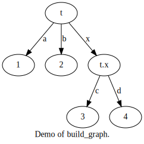
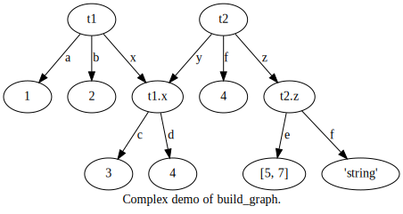

treevalue.utils.tree¶
build_graph¶
-
treevalue.utils.tree.build_graph(*roots, node_id_gen: Optional[Callable] = None, graph_title: Optional[str] = None, graph_name: Optional[str] = None, graph_cfg: Optional[Mapping[str, Any]] = None, repr_gen: Optional[Callable] = None, iter_gen: Optional[Callable] = None, node_cfg_gen: Optional[Callable] = None, edge_cfg_gen: Optional[Callable] = None) → graphviz.graphs.Digraph[source]¶ - Overview:
Build a graphviz graph based on given tree structure.
- Arguments:
roots: Root nodes of the graph.
node_id_gen (
Optional[Callable]): Node id generation function, default is None which means based on object id.graph_title (
Optional[str]): Title of the graph, default is None which means generate automatically based on timestamp.graph_name (
Optional[str]): Name of the graph, default is None which means auto generated based on graph title.graph_cfg (
Optional[Mapping[str, Any]]): Configuration of graph, default is None which means no configuration.repr_gen (
Optional[Callable]): Representation format generator, default is None which means using repr function.iter_gen (
Optional[Callable]): Iterator generator, default is None which means load from items method.node_cfg_gen (
Optional[Callable]): Node configuration generator, default is None which means no configuration.edge_cfg_gen (
Optional[Callable]): Edge configuration generator, default is None which means no configuration.
- Returns:
dot (
Digraph): Graphviz directed graph object.
Here is an example of build_graph function. The source code is
1 2 3 4 5 6 7 8 | from treevalue.utils import build_graph if __name__ == '__main__': t = {'a': 1, 'b': 2, 'x': {'c': 3, 'd': 4}} g = build_graph((t, 't'), graph_title="Demo of build_graph.") print(g.source) print(g.render('build_graph_demo.dat.gv', format='svg')) |
The generated graphviz source code should be
1 2 3 4 5 6 7 8 9 10 11 12 13 14 15 | // Demo of build_graph.
digraph demo_of_build_graph {
graph [label="Demo of build_graph."]
node_7fc405951370 [label=t]
node_7fc405951370__a [label=1]
node_7fc405951370 -> node_7fc405951370__a [label=a]
node_7fc405951370__b [label=2]
node_7fc405951370 -> node_7fc405951370__b [label=b]
node_7fc405951140 [label="t.x"]
node_7fc405951370 -> node_7fc405951140 [label=x]
node_7fc405951140__c [label=3]
node_7fc405951140 -> node_7fc405951140__c [label=c]
node_7fc405951140__d [label=4]
node_7fc405951140 -> node_7fc405951140__d [label=d]
}
|
The graph should be
Also, multiple rooted graph is supported, this function will detect the pointer of the objects. Just like another complex source code below.
1 2 3 4 5 6 7 8 9 | from treevalue.utils import build_graph if __name__ == '__main__': t1 = {'a': 1, 'b': 2, 'x': {'c': 3, 'd': 4}} t2 = {'f': 4, 'y': t1['x'], 'z': {'e': [5, 7], 'f': "string"}} g = build_graph((t1, 't1'), (t2, 't2'), graph_title="Complex demo of build_graph.") print(g.source) print(g.render('build_graph_complex_demo.dat.gv', format='svg')) |
The exported graph should be
The return value’s type of function graphics is class graphviz.dot.Digraph, from the opensource library graphviz, for further information of this project and graphviz.dot.Digraph’s usage, take a look at: